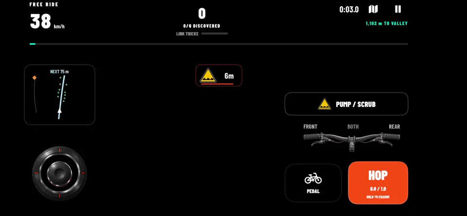

Best iPhone mountain bike games by riding style
Want to shave a second off the same descent, throw bigger tricks or ride a different course every day? These five downhill MTB games for iOS reward different kinds of riding.
By Tim Hudson · Store details checked
How we compared: MUNTED Studio makes MUNTED: MTB, currently listed as Whoopdy Doo. The footage and riding tips come from our game. For the other games, we compared published App Store features, prices and device requirements.
Pick your next ride
- Learn a trail and race your own ghost: MUNTED: MTB gives you named downhill trails to practise and an open Free Ride map.
- Link tricks through handcrafted courses: Shred! 2 puts combos and stunt challenges at the centre of each run.
- Explore fresh descents and manage risk: Descenders generates new terrain as you ride and charges an upfront price.
- Race and build out your bike: Bike Unchained 3 combines downhill and jump competitions with licensed bikes and parts.
- Chase a daily leaderboard: DROPFLOW MTB gives riders a new shared course every day.
MUNTED: MTB
Pick this if choosing your line, braking point and landing matters as much to you as the clock. Start on Fern & Fable, move to tighter turns on Loose Goose, or go for airtime on Cloud Nine. Medals and local ghosts give you a reason to ride the same trail again.
Free Ride lets you explore between runs. Progress stays on your device, and there’s no account to set up.
Download free ↗Look for Whoopdy Doo on the App Store.
Shred! 2
Pick this if you like repeating a short stretch to nail a trick combination. Its listing describes 40+ handcrafted levels, 200+ challenges and Bluetooth controller support.
Shred! 2 on the App Store ↗Descenders
Pick this if you want to read unfamiliar terrain on the fly. Its listing describes procedurally generated worlds, independent bike control and a risk-and-reward system for challenging runs.
Descenders on the App Store ↗Bike Unchained 3
Pick this if you want a racing progression loop. The listing describes separate downhill and jump events, time-limited competitions, and real-world brands for bikes, components and gear.
Bike Unchained 3 on the App Store ↗DROPFLOW MTB
Pick this if you want a new timed challenge each day. Its listing describes a daily procedural trail, a 24-hour global leaderboard and the option to race against other players’ runs.
DROPFLOW MTB on the App Store ↗Compare price and iPhone requirements
All five games list iPhone and iPad support. The table uses US App Store download prices. Refer to the linked listing for current local prices, compatibility and optional purchases.
| Game | Riding focus | Minimum iOS | US download |
|---|---|---|---|
| MUNTED: MTB (Whoopdy Doo) | Three trails, local ghosts and Free Ride | 17 | Free |
| Shred! 2 | Tricks on handcrafted courses | 15 | Free with in-app purchases |
| Descenders | Procedural downhill worlds | 14 | $9.99 |
| Bike Unchained 3 | Downhill and jump racing, bike upgrades | 15 | Free with in-app purchases |
| DROPFLOW MTB | Daily shared trail and leaderboard | 15 | Free with in-app purchases |
What a downhill run feels like in MUNTED: MTB

- Start with a route you can repeat. In a timed run on Fern & Fable, pedal out of the gate and get through all six gates before you worry about medals.
- Learn the difference between pump and hop. Try Pump / Scrub on rolling terrain. Use Hop when you want to lift the bike. A short press gives you a smaller hop than a full charge.
- Set up one landing. Pick an easy rise and shift your rider to follow the slope on touchdown. Once you have a clean run, use your ghost to see where a smoother landing saves time.